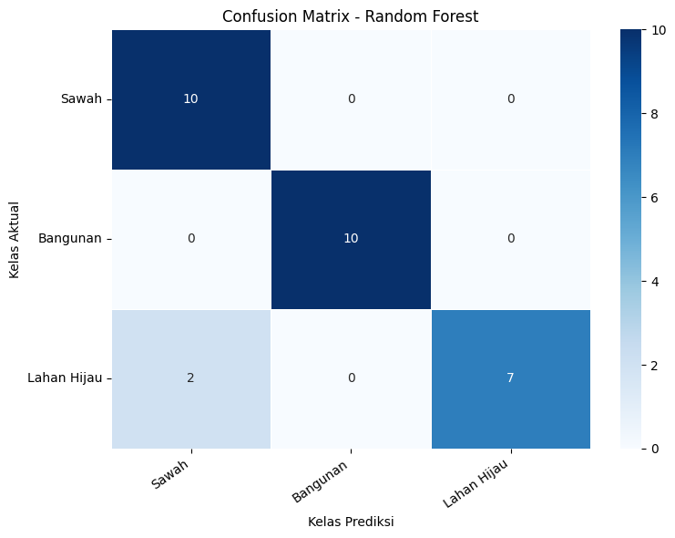
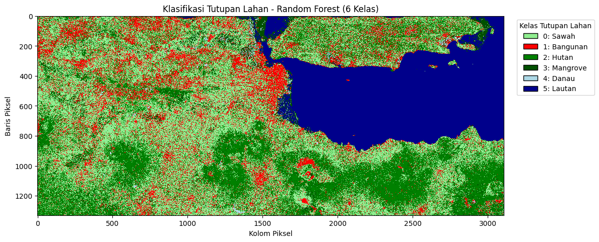

🌍 Klasifikasi Jawa Timur dengan Sentinel-2 dan Random Forest#
Alur CRISP-DM: dari pertanyaan, data, model, sampai peta#
singkatnya: kita ingin komputer bisa “membaca” citra satelit dan menandai mana sawah, bangunan, hutan, mangrove, danau, dan lautan di Jawa Timur. Caranya: kita beri komputer contoh (sampel) yang sudah kita labeli, biarkan ia belajar pola warna (nilai spektral) tiap jenis lahan, uji seberapa pintar ia, lalu pakai untuk menebak seluruh wilayah.
0. Persiapan Lingkungan#
pustaka untuk data spasial (geopandas, rasterio), akses citra satelit (openeo), dan pembelajaran mesin (scikit-learn). Semua pengaturan penting (kelas, band, periode, target) dikumpulkan di satu tempat supaya mudah dibaca dan diubah.
pip install geopandas
Requirement already satisfied: geopandas in /usr/local/python/3.12.1/lib/python3.12/site-packages (1.1.4)
Requirement already satisfied: numpy>=1.24 in /usr/local/python/3.12.1/lib/python3.12/site-packages (from geopandas) (2.5.2)
Requirement already satisfied: pyogrio>=0.7.2 in /usr/local/python/3.12.1/lib/python3.12/site-packages (from geopandas) (0.13.0)
Requirement already satisfied: packaging in /home/codespace/.local/lib/python3.12/site-packages (from geopandas) (26.0)
Requirement already satisfied: pandas>=2.0.0 in /usr/local/python/3.12.1/lib/python3.12/site-packages (from geopandas) (2.3.3)
Requirement already satisfied: pyproj>=3.5.0 in /usr/local/python/3.12.1/lib/python3.12/site-packages (from geopandas) (3.7.2)
Requirement already satisfied: shapely>=2.0.0 in /usr/local/python/3.12.1/lib/python3.12/site-packages (from geopandas) (2.1.2)
Requirement already satisfied: python-dateutil>=2.8.2 in /home/codespace/.local/lib/python3.12/site-packages (from pandas>=2.0.0->geopandas) (2.9.0.post0)
Requirement already satisfied: pytz>=2020.1 in /usr/local/python/3.12.1/lib/python3.12/site-packages (from pandas>=2.0.0->geopandas) (2026.3.post1)
Requirement already satisfied: tzdata>=2022.7 in /home/codespace/.local/lib/python3.12/site-packages (from pandas>=2.0.0->geopandas) (2025.3)
Requirement already satisfied: certifi in /home/codespace/.local/lib/python3.12/site-packages (from pyogrio>=0.7.2->geopandas) (2026.2.25)
Requirement already satisfied: six>=1.5 in /home/codespace/.local/lib/python3.12/site-packages (from python-dateutil>=2.8.2->pandas>=2.0.0->geopandas) (1.17.0)
[notice] A new release of pip is available: 26.0.1 -> 26.2.1
[notice] To update, run: python3 -m pip install --upgrade pip
Note: you may need to restart the kernel to use updated packages.
pip install openeo
Requirement already satisfied: openeo in /usr/local/python/3.12.1/lib/python3.12/site-packages (0.51.0)
Requirement already satisfied: requests>=2.26.0 in /home/codespace/.local/lib/python3.12/site-packages (from openeo) (2.32.5)
Requirement already satisfied: urllib3>=1.9.0 in /home/codespace/.local/lib/python3.12/site-packages (from openeo) (2.6.3)
Requirement already satisfied: shapely>=1.6.4 in /usr/local/python/3.12.1/lib/python3.12/site-packages (from openeo) (2.1.2)
Requirement already satisfied: numpy>=1.17.0 in /usr/local/python/3.12.1/lib/python3.12/site-packages (from openeo) (2.5.2)
Requirement already satisfied: xarray<2025.01.2,>=0.12.3 in /usr/local/python/3.12.1/lib/python3.12/site-packages (from openeo) (2025.1.1)
Requirement already satisfied: pandas<3.0.0,>0.20.0 in /usr/local/python/3.12.1/lib/python3.12/site-packages (from openeo) (2.3.3)
Requirement already satisfied: pystac>=1.5.0 in /usr/local/python/3.12.1/lib/python3.12/site-packages (from openeo) (1.15.2)
Requirement already satisfied: deprecated>=1.2.12 in /usr/local/python/3.12.1/lib/python3.12/site-packages (from openeo) (1.3.1)
Requirement already satisfied: geopandas>=0.14 in /usr/local/python/3.12.1/lib/python3.12/site-packages (from openeo) (1.1.4)
Requirement already satisfied: python-dateutil>=2.8.2 in /home/codespace/.local/lib/python3.12/site-packages (from pandas<3.0.0,>0.20.0->openeo) (2.9.0.post0)
Requirement already satisfied: pytz>=2020.1 in /usr/local/python/3.12.1/lib/python3.12/site-packages (from pandas<3.0.0,>0.20.0->openeo) (2026.3.post1)
Requirement already satisfied: tzdata>=2022.7 in /home/codespace/.local/lib/python3.12/site-packages (from pandas<3.0.0,>0.20.0->openeo) (2025.3)
Requirement already satisfied: packaging>=23.2 in /home/codespace/.local/lib/python3.12/site-packages (from xarray<2025.01.2,>=0.12.3->openeo) (26.0)
Requirement already satisfied: wrapt<3,>=1.10 in /usr/local/python/3.12.1/lib/python3.12/site-packages (from deprecated>=1.2.12->openeo) (2.4.0)
Requirement already satisfied: pyogrio>=0.7.2 in /usr/local/python/3.12.1/lib/python3.12/site-packages (from geopandas>=0.14->openeo) (0.13.0)
Requirement already satisfied: pyproj>=3.5.0 in /usr/local/python/3.12.1/lib/python3.12/site-packages (from geopandas>=0.14->openeo) (3.7.2)
Requirement already satisfied: certifi in /home/codespace/.local/lib/python3.12/site-packages (from pyogrio>=0.7.2->geopandas>=0.14->openeo) (2026.2.25)
Requirement already satisfied: pystac-core<2,>=1.15.0 in /usr/local/python/3.12.1/lib/python3.12/site-packages (from pystac>=1.5.0->openeo) (1.15.2)
Requirement already satisfied: pystac-ext-classification in /usr/local/python/3.12.1/lib/python3.12/site-packages (from pystac>=1.5.0->openeo) (2.0.1)
Requirement already satisfied: pystac-ext-datacube in /usr/local/python/3.12.1/lib/python3.12/site-packages (from pystac>=1.5.0->openeo) (2.2.1)
Requirement already satisfied: pystac-ext-eo in /usr/local/python/3.12.1/lib/python3.12/site-packages (from pystac>=1.5.0->openeo) (1.1.1)
Requirement already satisfied: pystac-ext-file in /usr/local/python/3.12.1/lib/python3.12/site-packages (from pystac>=1.5.0->openeo) (2.1.1)
Requirement already satisfied: pystac-ext-grid in /usr/local/python/3.12.1/lib/python3.12/site-packages (from pystac>=1.5.0->openeo) (1.1.1)
Requirement already satisfied: pystac-ext-item-assets in /usr/local/python/3.12.1/lib/python3.12/site-packages (from pystac>=1.5.0->openeo) (1.0.1)
Requirement already satisfied: pystac-ext-label in /usr/local/python/3.12.1/lib/python3.12/site-packages (from pystac>=1.5.0->openeo) (1.0.2)
Requirement already satisfied: pystac-ext-mgrs in /usr/local/python/3.12.1/lib/python3.12/site-packages (from pystac>=1.5.0->openeo) (1.0.1)
Requirement already satisfied: pystac-ext-mlm in /usr/local/python/3.12.1/lib/python3.12/site-packages (from pystac>=1.5.0->openeo) (1.4.1)
Requirement already satisfied: pystac-ext-pointcloud in /usr/local/python/3.12.1/lib/python3.12/site-packages (from pystac>=1.5.0->openeo) (1.0.1)
Requirement already satisfied: pystac-ext-projection in /usr/local/python/3.12.1/lib/python3.12/site-packages (from pystac>=1.5.0->openeo) (2.0.1)
Requirement already satisfied: pystac-ext-raster in /usr/local/python/3.12.1/lib/python3.12/site-packages (from pystac>=1.5.0->openeo) (1.1.1)
Requirement already satisfied: pystac-ext-render in /usr/local/python/3.12.1/lib/python3.12/site-packages (from pystac>=1.5.0->openeo) (2.0.0)
Requirement already satisfied: pystac-ext-sar in /usr/local/python/3.12.1/lib/python3.12/site-packages (from pystac>=1.5.0->openeo) (1.0.1)
Requirement already satisfied: pystac-ext-sat in /usr/local/python/3.12.1/lib/python3.12/site-packages (from pystac>=1.5.0->openeo) (1.0.1)
Requirement already satisfied: pystac-ext-scientific in /usr/local/python/3.12.1/lib/python3.12/site-packages (from pystac>=1.5.0->openeo) (1.0.1)
Requirement already satisfied: pystac-ext-storage in /usr/local/python/3.12.1/lib/python3.12/site-packages (from pystac>=1.5.0->openeo) (2.0.1)
Requirement already satisfied: pystac-ext-table in /usr/local/python/3.12.1/lib/python3.12/site-packages (from pystac>=1.5.0->openeo) (1.2.1)
Requirement already satisfied: pystac-ext-timestamps in /usr/local/python/3.12.1/lib/python3.12/site-packages (from pystac>=1.5.0->openeo) (1.1.1)
Requirement already satisfied: pystac-ext-version in /usr/local/python/3.12.1/lib/python3.12/site-packages (from pystac>=1.5.0->openeo) (1.2.1)
Requirement already satisfied: pystac-ext-view in /usr/local/python/3.12.1/lib/python3.12/site-packages (from pystac>=1.5.0->openeo) (1.0.1)
Requirement already satisfied: pystac-ext-xarray-assets in /usr/local/python/3.12.1/lib/python3.12/site-packages (from pystac>=1.5.0->openeo) (1.0.1)
Requirement already satisfied: six>=1.5 in /home/codespace/.local/lib/python3.12/site-packages (from python-dateutil>=2.8.2->pandas<3.0.0,>0.20.0->openeo) (1.17.0)
Requirement already satisfied: charset_normalizer<4,>=2 in /home/codespace/.local/lib/python3.12/site-packages (from requests>=2.26.0->openeo) (3.4.5)
Requirement already satisfied: idna<4,>=2.5 in /home/codespace/.local/lib/python3.12/site-packages (from requests>=2.26.0->openeo) (3.11)
[notice] A new release of pip is available: 26.0.1 -> 26.2.1
[notice] To update, run: python3 -m pip install --upgrade pip
Note: you may need to restart the kernel to use updated packages.
%pip install scikit-learn
Requirement already satisfied: scikit-learn in /usr/local/python/3.12.1/lib/python3.12/site-packages (1.9.1)
Requirement already satisfied: numpy>=1.24.1 in /usr/local/python/3.12.1/lib/python3.12/site-packages (from scikit-learn) (2.5.2)
Requirement already satisfied: scipy>=1.10.0 in /usr/local/python/3.12.1/lib/python3.12/site-packages (from scikit-learn) (1.18.1)
Requirement already satisfied: joblib>=1.4.0 in /usr/local/python/3.12.1/lib/python3.12/site-packages (from scikit-learn) (1.6.0)
Requirement already satisfied: narwhals>=2.0.1 in /usr/local/python/3.12.1/lib/python3.12/site-packages (from scikit-learn) (2.26.0)
Requirement already satisfied: threadpoolctl>=3.5.0 in /usr/local/python/3.12.1/lib/python3.12/site-packages (from scikit-learn) (3.6.0)
Requirement already satisfied: cloudpickle>=3.0 in /usr/local/python/3.12.1/lib/python3.12/site-packages (from joblib>=1.4.0->scikit-learn) (3.1.2)
[notice] A new release of pip is available: 26.0.1 -> 26.2.1
[notice] To update, run: python3 -m pip install --upgrade pip
Note: you may need to restart the kernel to use updated packages.
pip install rasterio
Collecting rasterio
Downloading rasterio-1.5.2-cp312-cp312-manylinux_2_28_x86_64.whl.metadata (8.6 kB)
Collecting affine (from rasterio)
Downloading affine-3.0.1-py3-none-any.whl.metadata (4.5 kB)
Requirement already satisfied: attrs in /home/codespace/.local/lib/python3.12/site-packages (from rasterio) (25.4.0)
Requirement already satisfied: certifi in /home/codespace/.local/lib/python3.12/site-packages (from rasterio) (2026.2.25)
Requirement already satisfied: click!=8.2.*,>=4.0 in /usr/local/python/3.12.1/lib/python3.12/site-packages (from rasterio) (8.5.0)
Requirement already satisfied: numpy>=2 in /usr/local/python/3.12.1/lib/python3.12/site-packages (from rasterio) (2.5.2)
Requirement already satisfied: pyparsing>=3.0 in /usr/local/python/3.12.1/lib/python3.12/site-packages (from rasterio) (3.3.3)
Downloading rasterio-1.5.2-cp312-cp312-manylinux_2_28_x86_64.whl (39.2 MB)
?25l ━━━━━━━━━━━━━━━━━━━━━━━━━━━━━━━━━━━━━━━━ 0.0/39.2 MB ? eta -:--:--
━━━━━━━━━━━━━━━━━━━━━━━━━━━━━━━━━━━━━━━╸ 39.1/39.2 MB 253.9 MB/s eta 0:00:01
━━━━━━━━━━━━━━━━━━━━━━━━━━━━━━━━━━━━━━━╸ 39.1/39.2 MB 253.9 MB/s eta 0:00:01
━━━━━━━━━━━━━━━━━━━━━━━━━━━━━━━━━━━━━━━╸ 39.1/39.2 MB 253.9 MB/s eta 0:00:01
━━━━━━━━━━━━━━━━━━━━━━━━━━━━━━━━━━━━━━━╸ 39.1/39.2 MB 253.9 MB/s eta 0:00:01
━━━━━━━━━━━━━━━━━━━━━━━━━━━━━━━━━━━━━━━━ 39.2/39.2 MB 43.0 MB/s 0:00:00
?25hDownloading affine-3.0.1-py3-none-any.whl (10 kB)
Installing collected packages: affine, rasterio
?25l
━━━━━━━━━━━━━━━━━━━━╺━━━━━━━━━━━━━━━━━━━ 1/2 [rasterio]
━━━━━━━━━━━━━━━━━━━━╺━━━━━━━━━━━━━━━━━━━ 1/2 [rasterio]
━━━━━━━━━━━━━━━━━━━━╺━━━━━━━━━━━━━━━━━━━ 1/2 [rasterio]
━━━━━━━━━━━━━━━━━━━━╺━━━━━━━━━━━━━━━━━━━ 1/2 [rasterio]
━━━━━━━━━━━━━━━━━━━━━━━━━━━━━━━━━━━━━━━━ 2/2 [rasterio]
?25h
Successfully installed affine-3.0.1 rasterio-1.5.2
[notice] A new release of pip is available: 26.0.1 -> 26.2.1
[notice] To update, run: python3 -m pip install --upgrade pip
Note: you may need to restart the kernel to use updated packages.
pip install seaborn
Requirement already satisfied: seaborn in /usr/local/python/3.12.1/lib/python3.12/site-packages (0.13.2)
Requirement already satisfied: numpy!=1.24.0,>=1.20 in /usr/local/python/3.12.1/lib/python3.12/site-packages (from seaborn) (2.5.2)
Requirement already satisfied: pandas>=1.2 in /usr/local/python/3.12.1/lib/python3.12/site-packages (from seaborn) (2.3.3)
Requirement already satisfied: matplotlib!=3.6.1,>=3.4 in /usr/local/python/3.12.1/lib/python3.12/site-packages (from seaborn) (3.11.2)
Requirement already satisfied: contourpy>=1.0.1 in /usr/local/python/3.12.1/lib/python3.12/site-packages (from matplotlib!=3.6.1,>=3.4->seaborn) (1.4.0)
Requirement already satisfied: cycler>=0.10 in /usr/local/python/3.12.1/lib/python3.12/site-packages (from matplotlib!=3.6.1,>=3.4->seaborn) (0.12.1)
Requirement already satisfied: fonttools>=4.28.2 in /usr/local/python/3.12.1/lib/python3.12/site-packages (from matplotlib!=3.6.1,>=3.4->seaborn) (4.66.1)
Requirement already satisfied: kiwisolver>=1.3.1 in /usr/local/python/3.12.1/lib/python3.12/site-packages (from matplotlib!=3.6.1,>=3.4->seaborn) (1.5.1)
Requirement already satisfied: packaging>=20.0 in /home/codespace/.local/lib/python3.12/site-packages (from matplotlib!=3.6.1,>=3.4->seaborn) (26.0)
Requirement already satisfied: pillow>=9 in /usr/local/python/3.12.1/lib/python3.12/site-packages (from matplotlib!=3.6.1,>=3.4->seaborn) (12.3.0)
Requirement already satisfied: pyparsing>=3 in /usr/local/python/3.12.1/lib/python3.12/site-packages (from matplotlib!=3.6.1,>=3.4->seaborn) (3.3.3)
Requirement already satisfied: python-dateutil>=2.7 in /home/codespace/.local/lib/python3.12/site-packages (from matplotlib!=3.6.1,>=3.4->seaborn) (2.9.0.post0)
Requirement already satisfied: pytz>=2020.1 in /usr/local/python/3.12.1/lib/python3.12/site-packages (from pandas>=1.2->seaborn) (2026.3.post1)
Requirement already satisfied: tzdata>=2022.7 in /home/codespace/.local/lib/python3.12/site-packages (from pandas>=1.2->seaborn) (2025.3)
Requirement already satisfied: six>=1.5 in /home/codespace/.local/lib/python3.12/site-packages (from python-dateutil>=2.7->matplotlib!=3.6.1,>=3.4->seaborn) (1.17.0)
[notice] A new release of pip is available: 26.0.1 -> 26.2.1
[notice] To update, run: python3 -m pip install --upgrade pip
Note: you may need to restart the kernel to use updated packages.
!pip install -q geopandas openeo shapely
[notice] A new release of pip is available: 26.0.1 -> 26.2.1
[notice] To update, run: python3 -m pip install --upgrade pip
1️⃣ Business Understanding#
1.1 Latar belakang (awal cerita)#
Jawa Timur adalah provinsi dengan wajah lahan yang sangat beragam: hamparan sawah di dataran rendah, bangunan dan kota yang terus tumbuh, hutan di pegunungan, mangrove di pesisir, danau/ranu di dataran tinggi, dan lautan di sisi utara serta selatan. Perubahan penggunaan lahan, misalnya sawah menjadi permukiman atau mangrove yang menyusut, berpengaruh pada pangan, banjir, dan lingkungan.
Memetakan semua itu secara manual (survei lapangan atau digitasi) sangat lambat dan mahal. Di sisi lain, satelit Sentinel-2 memotret bumi secara gratis dan berkala. Setiap jenis lahan memantulkan cahaya dengan “sidik jari” berbeda (misalnya tumbuhan memantulkan banyak inframerah dekat, air hampir menyerapnya). Pola inilah yang bisa dipelajari mesin.
1.2 Tujuan#
Tujuan bisnis: menghasilkan peta tutupan lahan Jawa Timur secara cepat, murah, dan bisa diulang kapan saja.
Tujuan data mining: membangun model klasifikasi multikelas (6 kelas) yang memprediksi kelas lahan sebuah piksel dari nilai spektralnya.
1.3 Kriteria sukses#
Hasil dianggap berhasil bila pada data uji (data yang tidak dipakai belajar):
Angka ini disimpan di TARGET_AKURASI dan TARGET_F1_MACRO, lalu diperiksa otomatis di Bagian 5.
1.4 Definisi kelas#
Label |
Kelas |
Gambaran |
|---|---|---|
0 |
Sawah |
Lahan pertanian padi/basah |
1 |
Bangunan |
Permukiman, kota, bangunan |
2 |
Hutan |
Vegetasi berpohon rapat (lahan hijau) |
3 |
Mangrove |
Vegetasi pesisir pasang-surut |
4 |
Danau |
Perairan darat (ranu, waduk) |
5 |
Lautan |
Perairan terbuka laut/selat |
1.5 Asumsi dan batasan#
Satu sampel diwakili satu piksel (titik representatif poligon).
Citra berupa komposit median Januari-September 2026, bukan satu tanggal tertentu.
Resolusi akhir ±110 m (0,001°). Ini cukup untuk skala provinsi, tetapi objek kecil (rumah, jalan) tidak terlihat jelas.
Tidak ada validasi lapangan independen. Akurasi diukur dari sampel yang kita labeli sendiri.
2️⃣ Data Understanding#
2.1 Collecting Data (mengumpulkan data)#
Kita butuh dua bahan:
Sampel latih (ground truth): kumpulan titik/poligon yang sudah kita labeli kelasnya. Ini ibarat “kunci jawaban” yang akan dipelajari model.
Citra Sentinel-2 L2A: foto satelit yang sudah dikoreksi atmosfer (surface reflectance), diambil lewat API openEO milik Copernicus Data Space.
Band yang dipakai:
Band |
Nama |
Panjang gelombang |
Kegunaan |
|---|---|---|---|
B02 |
Blue |
±490 nm |
Air, pembeda tanah/vegetasi |
B03 |
Green |
±560 nm |
Puncak pantulan hijau vegetasi, air |
B04 |
Red |
±665 nm |
Diserap klorofil, pembeda vegetasi |
B08 |
NIR (inframerah dekat) |
±842 nm |
Dipantulkan kuat oleh vegetasi sehat, diserap air |
B11 |
SWIR-1 |
±1610 nm |
Kelembapan, pembeda bangunan/tanah/vegetasi |
2.1.1 Mengumpulkan sampel latih#
Setiap file diberi label otomatis dari nama filenya (mis. sawah_jawatimur.zip → Sawah, lahanhijau_... → Hutan, perairanterbuka_... → Lautan). Semua dikonversi ke sistem koordinat yang sama (WGS84 / EPSG:4326) agar bisa digabung.
from google.colab import files
import geopandas as gpd
import pandas as pd
import zipfile
import io
# 1. Upload file ZIP melalui Choose File
uploaded = files.upload()
# 2. Membaca file berdasarkan nama yang diunggah
daftar_kelas = {
"sawah": ("Sawah", 0),
"bangunan": ("Bangunan", 1),
"hutan": ("Hutan", 2),
"mangrove": ("Mangrove", 3),
"danau": ("Danau", 4),
"lautan": ("Lautan", 5)
}
kumpulan_data = []
for nama_file, isi_file in uploaded.items():
nama_dasar = nama_file.lower().replace(".zip", "")
kelas_ditemukan = None
for kata_kunci, informasi in daftar_kelas.items():
if kata_kunci in nama_dasar:
kelas_ditemukan = informasi
break
if kelas_ditemukan is None:
print("File dilewati karena nama kelas tidak dikenali:", nama_file)
continue
with zipfile.ZipFile(io.BytesIO(isi_file)) as arsip:
nama_shp = [
nama for nama in arsip.namelist()
if nama.lower().endswith(".shp")
]
if not nama_shp:
print("Tidak ditemukan file SHP:", nama_file)
continue
with arsip.open(nama_shp[0]) as file_shp:
data = gpd.read_file(
"zip://" + nama_file + "!/" + nama_shp[0]
) if False else None
# Membaca shapefile langsung dari ZIP yang diunggah
data = gpd.read_file(
"zip:///" + "/content/" + nama_file + "!/" + nama_shp[0]
)
if data.crs is None:
raise ValueError("CRS tidak ditemukan pada " + nama_file)
data = data.to_crs("EPSG:4326")
nama_kelas, kode_kelas = kelas_ditemukan
data["label_teks"] = nama_kelas
data["label"] = kode_kelas
kumpulan_data.append(data)
print(nama_kelas, ":", len(data), "sampel")
# 3. Menggabungkan semua data
if not kumpulan_data:
raise ValueError("Tidak ada dataset yang berhasil dibaca.")
data_gabungan = gpd.GeoDataFrame(
pd.concat(kumpulan_data, ignore_index=True),
crs="EPSG:4326"
)
print("\nTotal sampel:", len(data_gabungan))
print(data_gabungan["label_teks"].value_counts())
# 4. Menentukan batas wilayah
min_x, min_y, max_x, max_y = data_gabungan.total_bounds
buffer = 0.005
batas_wilayah = {
"west": float(min_x - buffer),
"south": float(min_y - buffer),
"east": float(max_x + buffer),
"north": float(max_y + buffer)
}
print("\nBatas wilayah:", batas_wilayah)
---------------------------------------------------------------------------
ModuleNotFoundError Traceback (most recent call last)
Cell In[7], line 1
----> 1 from google.colab import files
2 import geopandas as gpd
3 import pandas as pd
ModuleNotFoundError: No module named 'google'
2.1.2 Mengunduh citra Sentinel-2 (openEO)#
Alurnya:
Filter: ambil koleksi
SENTINEL2_L2Apada wilayah, periode, 5 band, dan scene dengan awan ≤ 10%.Komposit median: dalam periode itu ada banyak foto. Awan dan bayangan awan hanya muncul di sebagian foto, jadi untuk tiap piksel dan tiap band kita ambil nilai tengah sepanjang waktu. Efeknya awan “terbuang” dan citra menjadi bersih:
Resample ke resolusi 0,001° agar ukuran data tetap ringan.
Jalankan sebagai batch job di server Copernicus (bisa menunggu antrean), lalu unduh hasilnya berupa GeoTIFF.
Jika GeoTIFF sudah ada di folder
hasil_sentinel2, proses unduh dilewati supaya tidak mengantre ulang.
import openeo
import time
import os
# 1. Koneksi ke Copernicus Data Space
koneksi = openeo.connect(
"openeo.dataspace.copernicus.eu"
)
koneksi.authenticate_oidc()
# 2. Mengambil koleksi Sentinel-2
kubus_citra = koneksi.load_collection(
"SENTINEL2_L2A",
spatial_extent=batas_wilayah,
temporal_extent=["2026-01-01", "2026-09-01"],
bands=["B02", "B03", "B04", "B08", "B11"],
max_cloud_cover=10
)
# 3. Membuat komposit median
komposit_citra = kubus_citra.median_time()
# 4. Mengatur resolusi spasial
komposit_citra = komposit_citra.resample_spatial(
resolution=0.001,
projection=4326
)
# 5. Membuat dan menjalankan batch job
job_citra = komposit_citra.create_job(
title="Sentinel2_Klasifikasi_Multikelas",
out_format="GTiff"
)
job_citra.start()
# 6. Memantau proses
status = job_citra.status()
while status in ["created", "queued", "running"]:
print("Status pemrosesan:", status)
time.sleep(30)
status = job_citra.status()
# 7. Mengunduh hasil
folder_output = "hasil_sentinel2"
if status == "finished":
os.makedirs(folder_output, exist_ok=True)
job_citra.download_results(folder_output)
print("Berhasil! Hasil citra disimpan di:", folder_output)
# Menampilkan file hasil
print(os.listdir(folder_output))
else:
print("Job gagal dengan status:", status)
for log in job_citra.logs():
print(log)
Authenticated using refresh token.
Status pemrosesan: created
Status pemrosesan: queued
Status pemrosesan: queued
Status pemrosesan: queued
Status pemrosesan: queued
Status pemrosesan: queued
Status pemrosesan: queued
Status pemrosesan: queued
Status pemrosesan: queued
Status pemrosesan: queued
Status pemrosesan: queued
Status pemrosesan: queued
Status pemrosesan: queued
Status pemrosesan: queued
Status pemrosesan: queued
Status pemrosesan: queued
Status pemrosesan: running
Status pemrosesan: running
Status pemrosesan: running
Status pemrosesan: running
Status pemrosesan: running
Status pemrosesan: running
Status pemrosesan: running
Status pemrosesan: running
Status pemrosesan: running
Status pemrosesan: running
Status pemrosesan: running
Status pemrosesan: running
Status pemrosesan: running
Status pemrosesan: running
Status pemrosesan: running
Status pemrosesan: running
Status pemrosesan: running
Status pemrosesan: running
Status pemrosesan: running
Status pemrosesan: running
Status pemrosesan: running
Status pemrosesan: running
Status pemrosesan: running
Status pemrosesan: running
Status pemrosesan: running
Status pemrosesan: running
Status pemrosesan: running
Status pemrosesan: running
Status pemrosesan: running
Status pemrosesan: running
Status pemrosesan: running
Status pemrosesan: running
Status pemrosesan: running
Status pemrosesan: running
Status pemrosesan: running
Status pemrosesan: running
Status pemrosesan: running
Status pemrosesan: running
Status pemrosesan: running
Status pemrosesan: running
Status pemrosesan: running
Status pemrosesan: running
Status pemrosesan: running
Status pemrosesan: running
Status pemrosesan: running
Status pemrosesan: running
Status pemrosesan: running
Status pemrosesan: running
/tmp/ipykernel_1755/1697775750.py:51: UserDeprecationWarning: Call to deprecated method download_results. (Instead use `BatchJob.get_results` and the more flexible download functionality of `JobResults`) -- Deprecated since version 0.4.10.
job_citra.download_results(folder_output)
/usr/local/lib/python3.13/dist-packages/openeo/rest/job.py:193: UserDeprecationWarning: Call to deprecated method get_result. (Use `BatchJob.get_results` instead.) -- Deprecated since version 0.4.10.
return self.get_result().download_files(target)
/usr/local/lib/python3.13/dist-packages/openeo/rest/job.py:197: UserDeprecationWarning: Call to deprecated class _Result. (Use `JobResults` instead) -- Deprecated since version 0.4.10.
return _Result(self)
Berhasil! Hasil citra disimpan di: hasil_sentinel2
['openEO.tif']
import os
print("Lokasi kerja Colab:", os.getcwd())
print("\nIsi folder kerja:")
for nama in os.listdir("."):
if os.path.isdir(nama):
print(f"[FOLDER] {nama}")
else:
print(f"[FILE] {nama}")
print("\nMencari file GeoTIFF di seluruh folder kerja...")
for akar, folder, daftar_file in os.walk("/content"):
for nama in daftar_file:
if nama.lower().endswith((".tif", ".tiff")):
print("Ditemukan:", os.path.join(akar, nama))
Lokasi kerja Colab: /content
Isi folder kerja:
[FOLDER] .config
[FOLDER] hasil_sentinel2
[FILE] bangunan_jawatimur.zip
[FILE] danau_jawatimur.zip
[FILE] sawah_jawatimur.zip
[FILE] perairanterbuka_jawatiur.zip
[FILE] lahanhijau_jawatimur.zip
[FILE] mangrove_jawatimur.zip
[FOLDER] sample_data
Mencari file GeoTIFF di seluruh folder kerja...
Ditemukan: /content/hasil_sentinel2/openEO.tif
import os
import rasterio
file_citra = "/content/hasil_sentinel2/openEO.tif"
with rasterio.open(file_citra) as src:
print("File citra berhasil dibaca!")
print("Format:", src.driver)
print("Jumlah band:", src.count)
print("Ukuran raster:", src.width, "x", src.height)
print("CRS:", src.crs)
print("Resolusi:", src.res)
print("Batas koordinat:", src.bounds)
print("Tipe data:", src.dtypes)
File citra berhasil dibaca!
Format: GTiff
Jumlah band: 5
Ukuran raster: 3108 x 1330
CRS: EPSG:4326
Resolusi: (0.0010000000000000013, 0.0009999999999999994)
Batas koordinat: BoundingBox(left=111.14373777505801, bottom=-8.210779371892286, right=114.25173777505802, top=-6.880779371892287)
Tipe data: ('int16', 'int16', 'int16', 'int16', 'int16')
3️⃣ Data Preparation#
Model hanya mengerti tabel angka. Padahal data kita berupa poligon dan citra. Tugas tahap ini: menerjemahkan keduanya menjadi satu tabel, membersihkannya, dan menambah fitur yang lebih informatif.
Urutannya: (3.1) ekstraksi nilai piksel → (3.2) pembersihan → (3.3) rekayasa fitur → (3.4) eksplorasi tabel → (3.5) pembagian data latih/uji.
3.1 Ekstraksi nilai piksel (menyatukan sampel dan citra)#
Untuk setiap sampel kita cari piksel tempat sampel itu berada, lalu catat nilai kelima band pada piksel itu. Hasilnya satu baris per sampel: B02, B03, B04, B08, B11, Kelas, Label, Longitude, Latitude.
Beberapa catatan teknis:
Sampel poligon diwakili oleh
representative_point(), yaitu titik yang dijamin berada di dalam poligon. (Titik pusat/centroid bisa jatuh di luar poligon yang bentuknya melengkung.)Titik dihitung di CRS terproyeksi (UTM) supaya bentuk geometri tidak terdistorsi, lalu diubah ke CRS raster untuk mencari baris/kolom piksel.
Sampel yang jatuh di luar citra diberi
NaNdan dibuang pada langkah pembersihan.
import os
import geopandas as gpd
import numpy as np
import pandas as pd
import rasterio
print("=== DATA PREPARATION ===")
file_raster = "/content/hasil_sentinel2/openEO.tif"
if not os.path.exists(file_raster):
raise FileNotFoundError(f"Raster tidak ditemukan: {file_raster}")
# Membaca dan menggabungkan data spasial yang Anda unggah
print("Membaca file data latih...")
gdf_sawah = gpd.read_file("sawah_jawatimur.zip")
gdf_sawah["kelas"] = "Sawah"
gdf_lahan_hijau = gpd.read_file("lahanhijau_jawatimur.geojson")
gdf_lahan_hijau["kelas"] = "Lahan Hijau"
gdf_bangunan = gpd.read_file("bangunan_jawatimur.zip")
gdf_bangunan["kelas"] = "Bangunan"
# Gabungkan menjadi satu GeoDataFrame
gdf_gabungan = pd.concat(
[gdf_sawah, gdf_lahan_hijau, gdf_bangunan], ignore_index=True
)
# Pastikan CRS terdefinisi (default diasumsikan WGS84 jika belum ada)
if gdf_gabungan.crs is None:
gdf_gabungan.set_crs("EPSG:4326", inplace=True)
# Cari variabel data sampel yang tersedia
if "data_latih" in globals():
sampel = data_latih.copy()
elif "gdf_gabungan" in globals():
sampel = gdf_gabungan.copy()
else:
raise NameError(
"Data sampel belum tersedia. Jalankan kode pembacaan dan penggabungan"
" terlebih dahulu."
)
print("Kolom data sampel:", sampel.columns.tolist())
print("Jumlah sampel:", len(sampel))
# Deteksi kolom kelas dan label secara otomatis
pilihan_kelas = [
"kategori",
"label_teks",
"kelas",
"Kelas",
"class",
"nama_kelas",
"jenis",
]
pilihan_label = [
"kode_kelas",
"label",
"Label",
"kode",
"class_id",
"id_kelas",
]
kolom_kelas = next((c for c in pilihan_kelas if c in sampel.columns), None)
kolom_label = next((c for c in pilihan_label if c in sampel.columns), None)
# Jika kolom nama kelas tidak tersedia, gunakan label numerik
if kolom_kelas is None and kolom_label is not None:
peta_kelas = {
0: "Sawah",
1: "Bangunan",
2: "Hutan",
3: "Mangrove",
4: "Danau",
5: "Lautan",
}
sampel["Kelas"] = (
pd.to_numeric(sampel[kolom_label], errors="coerce").map(peta_kelas)
)
kolom_kelas = "Kelas"
if kolom_label is None and kolom_kelas is not None:
peta_label = {
"Sawah": 0,
"Bangunan": 1,
"Lahan Hijau": 2,
"Hutan": 2,
"Mangrove": 3,
"Danau": 4,
"Ranu": 4,
"Lautan": 5,
"Perairan Laut": 5,
}
sampel["Label"] = sampel[kolom_kelas].map(peta_label)
kolom_label = "Label"
if kolom_kelas is None or kolom_label is None:
raise ValueError(
"Kolom kelas/label tidak berhasil dikenali. Periksa daftar kolom yang"
" tercetak di atas."
)
# Pastikan geometri tersedia
sampel = sampel[sampel.geometry.notna() & ~sampel.geometry.is_empty].copy()
with rasterio.open(file_raster) as src:
print("\nCRS raster:", src.crs)
print("Jumlah band:", src.count)
print("Ukuran raster:", src.width, "x", src.height)
if src.count < 5:
raise ValueError("Raster harus memiliki minimal 5 band.")
# Hitung titik tengah di CRS proyeksi
sampel_utm = sampel.to_crs(sampel.estimate_utm_crs())
titik_utm = sampel_utm.geometry.centroid
titik_raster = gpd.GeoSeries(titik_utm, crs=sampel_utm.crs).to_crs(src.crs)
koordinat = list(zip(titik_raster.x, titik_raster.y))
# Ambil nilai piksel dan ubah ke float agar NaN dapat digunakan
piksel = np.ma.vstack(list(src.sample(koordinat, masked=True)))
nilai_band = piksel.astype(np.float32).filled(np.nan)
# Periksa piksel di luar batas raster
for i, (x, y) in enumerate(koordinat):
row, col = src.index(x, y)
if not (0 <= row < src.height and 0 <= col < src.width):
nilai_band[i, :] = np.nan
# Susun dataset
df_dataset = pd.DataFrame(
nilai_band[:, :5], columns=["B02", "B03", "B04", "B08", "B11"]
)
df_dataset["Kelas"] = sampel[kolom_kelas].to_numpy()
df_dataset["Label"] = sampel[kolom_label].to_numpy()
titik_wgs84 = sampel_utm.geometry.centroid.to_crs("EPSG:4326")
df_dataset["Longitude"] = titik_wgs84.x.to_numpy()
df_dataset["Latitude"] = titik_wgs84.y.to_numpy()
print("\nEkstraksi piksel selesai.")
print("Jumlah sampel awal:", len(df_dataset))
display(df_dataset.head())
=== DATA PREPARATION ===
Membaca file data latih...
Kolom data sampel: ['FID', 'geometry', 'kelas']
Jumlah sampel: 150
CRS raster: EPSG:4326
Jumlah band: 5
Ukuran raster: 3108 x 1330
Ekstraksi piksel selesai.
Jumlah sampel awal: 150
| B02 | B03 | B04 | B08 | B11 | Kelas | Label | Longitude | Latitude | |
|---|---|---|---|---|---|---|---|---|---|
| 0 | 356.0 | 480.0 | 418.0 | 1605.0 | 1105.0 | Sawah | 0 | 113.849189 | -7.913062 |
| 1 | 464.0 | 647.0 | 562.0 | 2389.0 | 1626.0 | Sawah | 0 | 113.851890 | -7.911671 |
| 2 | 404.0 | 574.0 | 421.0 | 2284.0 | 1552.0 | Sawah | 0 | 113.851118 | -7.916964 |
| 3 | 417.0 | 583.0 | 553.0 | 2302.0 | 1293.0 | Sawah | 0 | 113.856032 | -7.905370 |
| 4 | 530.0 | 806.0 | 848.0 | 2209.0 | 2064.0 | Sawah | 0 | 113.802763 | -7.934209 |
3.2 Rekayasa fitur (feature engineering): NDVI dan NDWI#
Lima band mentah sudah informatif, tetapi para ahli penginderaan jauh telah menemukan rumus rasio yang menonjolkan hal tertentu dan relatif tahan terhadap perbedaan terang-gelap (misalnya bayangan).
NDVI (Normalized Difference Vegetation Index): mengukur kehijauan/kerapatan vegetasi. $\(NDVI = \frac{NIR - Red}{NIR + Red} = \frac{B08 - B04}{B08 + B04}\)$
NDWI (Normalized Difference Water Index, McFeeters): menonjolkan air. $\(NDWI = \frac{Green - NIR}{Green + NIR} = \frac{B03 - B08}{B03 + B08}\)$
Nilainya selalu di antara −1 dan +1. Pembacaan kasar:
Indeks |
Nilai tinggi (→ +1) |
Nilai rendah (→ −1) |
|---|---|---|
NDVI |
Vegetasi lebat (hutan, mangrove, sawah subur) |
Air, bangunan/tanah terbuka (≈ 0 atau negatif) |
NDWI |
Air (danau, laut) |
Vegetasi dan daratan |
# Hitung NDVI dan NDWI
df_dataset["NDVI"] = (
(df_dataset["B08"] - df_dataset["B04"]) /
(df_dataset["B08"] + df_dataset["B04"] + 1e-6)
)
df_dataset["NDWI"] = (
(df_dataset["B03"] - df_dataset["B08"]) /
(df_dataset["B03"] + df_dataset["B08"] + 1e-6)
)
# Bersihkan nilai tak valid
df_dataset.replace([np.inf, -np.inf], np.nan, inplace=True)
kolom_wajib = [
"B02", "B03", "B04", "B08", "B11",
"Kelas", "Label", "Longitude", "Latitude"
]
df_dataset.dropna(subset=kolom_wajib, inplace=True)
df_dataset.reset_index(drop=True, inplace=True)
# Simpan CSV
nama_csv = "/content/dataset_uts_klasifikasi.csv"
df_dataset.to_csv(
nama_csv,
index=False,
encoding="utf-8-sig"
)
print("=== DATA PREPARATION SELESAI ===")
print("Jumlah sampel valid:", len(df_dataset))
print("Jumlah kolom:", len(df_dataset.columns))
print("File tersimpan:", nama_csv)
print("\nJumlah sampel per kelas:")
print(df_dataset["Kelas"].value_counts())
print("\nPreview dataset:")
display(df_dataset.head(10))
# Unduh CSV ke komputer
from google.colab import files
files.download(nama_csv)
=== DATA PREPARATION SELESAI ===
Jumlah sampel valid: 143
Jumlah kolom: 11
File tersimpan: /content/dataset_uts_klasifikasi.csv
Jumlah sampel per kelas:
Kelas
Sawah 50
Bangunan 50
Lahan Hijau 43
Name: count, dtype: int64
Preview dataset:
| B02 | B03 | B04 | B08 | B11 | Kelas | Label | Longitude | Latitude | NDVI | NDWI | |
|---|---|---|---|---|---|---|---|---|---|---|---|
| 0 | 356.0 | 480.0 | 418.0 | 1605.0 | 1105.0 | Sawah | 0 | 113.849189 | -7.913062 | 0.586752 | -0.539568 |
| 1 | 464.0 | 647.0 | 562.0 | 2389.0 | 1626.0 | Sawah | 0 | 113.851890 | -7.911671 | 0.619112 | -0.573781 |
| 2 | 404.0 | 574.0 | 421.0 | 2284.0 | 1552.0 | Sawah | 0 | 113.851118 | -7.916964 | 0.688725 | -0.598320 |
| 3 | 417.0 | 583.0 | 553.0 | 2302.0 | 1293.0 | Sawah | 0 | 113.856032 | -7.905370 | 0.612609 | -0.595841 |
| 4 | 530.0 | 806.0 | 848.0 | 2209.0 | 2064.0 | Sawah | 0 | 113.802763 | -7.934209 | 0.445208 | -0.465340 |
| 5 | 442.0 | 655.0 | 675.0 | 1987.0 | 1645.0 | Sawah | 0 | 113.802120 | -7.935932 | 0.492863 | -0.504164 |
| 6 | 465.0 | 668.0 | 730.0 | 2307.0 | 1844.0 | Sawah | 0 | 113.808350 | -7.932968 | 0.519262 | -0.550924 |
| 7 | 519.0 | 790.0 | 721.0 | 2922.0 | 2142.0 | Sawah | 0 | 113.828612 | -7.925930 | 0.604172 | -0.574353 |
| 8 | 482.0 | 737.0 | 739.0 | 2268.0 | 1810.0 | Sawah | 0 | 113.828312 | -7.930173 | 0.508480 | -0.509484 |
| 9 | 476.0 | 693.0 | 683.0 | 2124.0 | 1651.0 | Sawah | 0 | 113.832497 | -7.927696 | 0.513359 | -0.507987 |
3.3 Pembagian data latih dan data uji#
80% latih dan 20% uji.
Stratified: proporsi tiap kelas dijaga sama di data latih dan uji, jadi kelas kecil tidak “hilang” dari data uji.
random_statetetap agar pembagian bisa diulang persis.
import os
import shutil
import joblib
import numpy as np
import pandas as pd
import matplotlib.pyplot as plt
import seaborn as sns
from google.colab import files
from sklearn.model_selection import train_test_split
from sklearn.ensemble import RandomForestClassifier
from sklearn.metrics import (
accuracy_score,
classification_report,
confusion_matrix
)
# ============================================================
# 1. PERSIAPAN DATA & FITUR TAMBAHAN (NDVI, NDWI)
# ============================================================
if "df_dataset" not in globals():
raise NameError(
"df_dataset belum tersedia. Jalankan cell preprocessing terlebih dahulu."
)
data_model = df_dataset.copy()
# Hitung NDVI dan NDWI jika belum ada di df_dataset
# NDVI = (B08 - B04) / (B08 + B04)
# NDWI = (B03 - B08) / (B03 + B08) (atau menggunakan B11 tergantung kebutuhan)
if "NDVI" not in data_model.columns:
data_model["NDVI"] = (data_model["B08"] - data_model["B04"]) / (data_model["B08"] + data_model["B04"])
if "NDWI" not in data_model.columns:
data_model["NDWI"] = (data_model["B03"] - data_model["B08"]) / (data_model["B03"] + data_model["B08"])
fitur_kolom = [
"B02", "B03", "B04", "B08", "B11", "NDVI", "NDWI"
]
# Mapping kelas disesuaikan dengan data Anda (Sawah, Bangunan, Lahan Hijau)
nama_kelas = {
0: "Sawah",
1: "Bangunan",
2: "Lahan Hijau"
}
label_urut = list(nama_kelas.keys())
nama_urut = list(nama_kelas.values())
kolom_dibutuhkan = fitur_kolom + ["Label"]
kolom_hilang = [
kolom for kolom in kolom_dibutuhkan
if kolom not in data_model.columns
]
if kolom_hilang:
raise ValueError(
f"Kolom berikut tidak ditemukan: {kolom_hilang}"
)
# Pastikan fitur dan label berupa angka
for kolom in kolom_dibutuhkan:
data_model[kolom] = pd.to_numeric(
data_model[kolom], errors="coerce"
)
data_model.replace([np.inf, -np.inf], np.nan, inplace=True)
data_model.dropna(subset=kolom_dibutuhkan, inplace=True)
# Hanya gunakan label bilangan bulat yang sesuai dengan mapping
data_model = data_model[
data_model["Label"].isin(label_urut)
& (data_model["Label"] % 1 == 0)
].copy()
data_model["Label"] = data_model["Label"].astype(int)
if data_model.empty:
raise ValueError("Tidak ada data valid untuk pemodelan.")
# Periksa jumlah sampel setiap kelas
jumlah_kelas = (
data_model["Label"]
.value_counts()
.reindex(label_urut, fill_value=0)
)
print("=" * 60)
print("PEMETAAN LABEL DAN DISTRIBUSI DATA")
print("=" * 60)
display(pd.DataFrame({
"Label": label_urut,
"Nama Kelas": nama_urut,
"Jumlah Data": jumlah_kelas.values
}))
print("Total data valid:", len(data_model))
kelas_kurang = jumlah_kelas[jumlah_kelas < 2]
if not kelas_kurang.empty:
raise ValueError(
"Setiap kelas harus memiliki minimal 2 sampel. "
f"Kelas yang kurang data: {kelas_kurang.to_dict()}"
)
# ============================================================
# 2. PEMBAGIAN DATA TRAINING DAN TESTING
# ============================================================
print("\n" + "=" * 60)
print("PEMBAGIAN DATA TRAINING DAN TESTING")
print("=" * 60)
X = data_model[fitur_kolom].copy()
y = data_model["Label"].copy()
X_train, X_test, y_train, y_test = train_test_split(
X,
y,
test_size=0.2,
random_state=21,
stratify=y
)
print("Total data :", len(data_model))
print("Data training :", len(X_train))
print("Data testing :", len(X_test))
print("Jumlah fitur :", len(fitur_kolom))
print("\nDistribusi kelas training:")
display(
y_train.value_counts()
.reindex(label_urut, fill_value=0)
.rename(index=nama_kelas)
.rename("Jumlah")
.to_frame()
)
print("Distribusi kelas testing:")
display(
y_test.value_counts()
.reindex(label_urut, fill_value=0)
.rename(index=nama_kelas)
.rename("Jumlah")
.to_frame()
)
# ============================================================
# 3. TRAINING RANDOM FOREST
# ============================================================
print("\n" + "=" * 60)
print("TRAINING RANDOM FOREST")
print("=" * 60)
model_rf = RandomForestClassifier(
n_estimators=300,
max_depth=None,
min_samples_split=2,
min_samples_leaf=1,
max_features="sqrt",
class_weight="balanced",
random_state=21,
n_jobs=-1
)
model_rf.fit(X_train, y_train)
print("Training selesai.")
print("Fitur model:", list(model_rf.feature_names_in_))
print("Label model:", model_rf.classes_)
# ============================================================
# 4. EVALUASI PADA DATA TESTING
# ============================================================
print("\n" + "=" * 60)
print("EVALUASI RANDOM FOREST")
print("=" * 60)
y_pred = model_rf.predict(X_test)
akurasi = accuracy_score(y_test, y_pred)
jumlah_benar = int((y_test.to_numpy() == y_pred).sum())
jumlah_salah = len(y_test) - jumlah_benar
print("Jumlah data testing :", len(y_test))
print("Prediksi benar :", jumlah_benar)
print("Prediksi salah :", jumlah_salah)
print(f"Akurasi testing : {akurasi * 100:.2f}%")
print("\nCLASSIFICATION REPORT")
laporan = classification_report(
y_test,
y_pred,
labels=label_urut,
target_names=nama_urut,
output_dict=True,
zero_division=0
)
display(pd.DataFrame(laporan).transpose().round(3))
# ============================================================
# 5. CONFUSION MATRIX
# ============================================================
cm = confusion_matrix(
y_test,
y_pred,
labels=label_urut
)
tabel_cm = pd.DataFrame(
cm,
index=nama_urut,
columns=nama_urut
)
print("\nCONFUSION MATRIX")
print("Baris = kelas aktual, kolom = kelas prediksi")
display(tabel_cm)
plt.figure(figsize=(8, 6))
sns.heatmap(
tabel_cm,
annot=True,
fmt="d",
cmap="Blues",
linewidths=0.5
)
plt.title("Confusion Matrix - Random Forest")
plt.xlabel("Kelas Prediksi")
plt.ylabel("Kelas Aktual")
plt.xticks(rotation=35, ha="right")
plt.yticks(rotation=0)
plt.tight_layout()
plt.show()
# ============================================================
# 6. RINGKASAN JENIS KESALAHAN
# ============================================================
print("\n" + "=" * 60)
print("RINGKASAN JENIS KESALAHAN")
print("=" * 60)
data_salah = pd.DataFrame({
"Label Aktual": y_test.to_numpy(),
"Label Prediksi": y_pred
})
data_salah = data_salah[
data_salah["Label Aktual"] != data_salah["Label Prediksi"]
].copy()
if data_salah.empty:
ringkasan_salah = pd.DataFrame(columns=[
"Kelas Aktual",
"Diprediksi Sebagai",
"Jumlah Kesalahan"
])
print("Tidak ada kesalahan pada data testing.")
else:
ringkasan_salah = (
data_salah
.groupby(["Label Aktual", "Label Prediksi"])
.size()
.reset_index(name="Jumlah Kesalahan")
)
ringkasan_salah["Kelas Aktual"] = (
ringkasan_salah["Label Aktual"].map(nama_kelas)
)
ringkasan_salah["Diprediksi Sebagai"] = (
ringkasan_salah["Label Prediksi"].map(nama_kelas)
)
ringkasan_salah = (
ringkasan_salah[[
"Kelas Aktual",
"Diprediksi Sebagai",
"Jumlah Kesalahan"
]]
.sort_values("Jumlah Kesalahan", ascending=False)
.reset_index(drop=True)
)
display(ringkasan_salah)
# ============================================================
# 7. SIMPAN MODEL DAN HASIL EVALUASI
# ============================================================
print("\n" + "=" * 60)
print("EKSPOR HASIL")
print("=" * 60)
folder_hasil = "/content/hasil_random_forest"
os.makedirs(folder_hasil, exist_ok=True)
joblib.dump(
model_rf,
os.path.join(folder_hasil, "model_random_forest.pkl")
)
joblib.dump(
nama_kelas,
os.path.join(folder_hasil, "mapping_kelas.pkl")
)
pd.DataFrame(laporan).transpose().to_csv(
os.path.join(folder_hasil, "classification_report.csv")
)
tabel_cm.to_csv(
os.path.join(folder_hasil, "confusion_matrix.csv")
)
plt.figure(figsize=(8, 6))
sns.heatmap(
tabel_cm,
annot=True,
fmt="d",
cmap="Blues",
linewidths=0.5
)
plt.title("Confusion Matrix - Random Forest")
plt.xlabel("Kelas Prediksi")
plt.ylabel("Kelas Aktual")
plt.xticks(rotation=35, ha="right")
plt.yticks(rotation=0)
plt.tight_layout()
plt.savefig(
os.path.join(
folder_hasil,
"confusion_matrix_random_forest.png"
),
dpi=300,
bbox_inches="tight"
)
plt.close()
if not data_salah.empty:
ringkasan_salah.to_csv(
os.path.join(folder_hasil, "ringkasan_jenis_kesalahan.csv"),
index=False
)
hasil_testing = X_test.copy()
hasil_testing["Label Aktual"] = y_test
hasil_testing["Label Prediksi"] = y_pred
hasil_testing["Nama Aktual"] = y_test.map(nama_kelas)
hasil_testing["Nama Prediksi"] = pd.Series(
y_pred, index=y_test.index
).map(nama_kelas)
hasil_testing.to_csv(
os.path.join(folder_hasil, "hasil_testing.csv"),
index=False
)
file_zip = shutil.make_archive(
folder_hasil,
"zip",
folder_hasil
)
print("File hasil tersimpan di:", folder_hasil)
print("ZIP hasil:", file_zip)
print("\nModel deployment: model_random_forest.pkl")
files.download(file_zip)
============================================================
PEMETAAN LABEL DAN DISTRIBUSI DATA
============================================================
| Label | Nama Kelas | Jumlah Data | |
|---|---|---|---|
| 0 | 0 | Sawah | 50 |
| 1 | 1 | Bangunan | 50 |
| 2 | 2 | Lahan Hijau | 43 |
Total data valid: 143
============================================================
PEMBAGIAN DATA TRAINING DAN TESTING
============================================================
Total data : 143
Data training : 114
Data testing : 29
Jumlah fitur : 7
Distribusi kelas training:
| Jumlah | |
|---|---|
| Label | |
| Sawah | 40 |
| Bangunan | 40 |
| Lahan Hijau | 34 |
Distribusi kelas testing:
| Jumlah | |
|---|---|
| Label | |
| Sawah | 10 |
| Bangunan | 10 |
| Lahan Hijau | 9 |
============================================================
TRAINING RANDOM FOREST
============================================================
Training selesai.
Fitur model: ['B02', 'B03', 'B04', 'B08', 'B11', 'NDVI', 'NDWI']
Label model: [0 1 2]
============================================================
EVALUASI RANDOM FOREST
============================================================
Jumlah data testing : 29
Prediksi benar : 27
Prediksi salah : 2
Akurasi testing : 93.10%
CLASSIFICATION REPORT
| precision | recall | f1-score | support | |
|---|---|---|---|---|
| Sawah | 0.833 | 1.000 | 0.909 | 10.000 |
| Bangunan | 1.000 | 1.000 | 1.000 | 10.000 |
| Lahan Hijau | 1.000 | 0.778 | 0.875 | 9.000 |
| accuracy | 0.931 | 0.931 | 0.931 | 0.931 |
| macro avg | 0.944 | 0.926 | 0.928 | 29.000 |
| weighted avg | 0.943 | 0.931 | 0.930 | 29.000 |
CONFUSION MATRIX
Baris = kelas aktual, kolom = kelas prediksi
| Sawah | Bangunan | Lahan Hijau | |
|---|---|---|---|
| Sawah | 10 | 0 | 0 |
| Bangunan | 0 | 10 | 0 |
| Lahan Hijau | 2 | 0 | 7 |

============================================================
RINGKASAN JENIS KESALAHAN
============================================================
| Kelas Aktual | Diprediksi Sebagai | Jumlah Kesalahan | |
|---|---|---|---|
| 0 | Lahan Hijau | Sawah | 2 |
============================================================
EKSPOR HASIL
============================================================
File hasil tersimpan di: /content/hasil_random_forest
ZIP hasil: /content/hasil_random_forest.zip
Model deployment: model_random_forest.pkl
4️⃣ Modeling#
4.1 Mengapa Random Forest?#
Random Forest adalah kumpulan banyak pohon keputusan yang masing-masing belajar dari sampel acak, lalu memberi suara. Cocok untuk kasus ini karena: tidak perlu normalisasi nilai band, mampu menangkap hubungan non-linear, relatif tahan overfitting dan data kecil, serta bisa menunjukkan fitur mana yang paling penting.
a. Satu pohon keputusan#
Sebuah pohon bertanya berurutan, misalnya “NDVI > 0,5? B11 < 1500?”, hingga sampai pada jawaban kelas. Pertanyaan terbaik dipilih dengan mengukur kemurnian simpul memakai Gini impurity:
dengan \(p_k\) = proporsi kelas \(k\) di simpul itu. \(G=0\) berarti simpul murni (satu kelas saja). Contoh: simpul berisi 50% Sawah dan 50% Hutan → \(G = 1-(0{,}5^2+0{,}5^2) = 0{,}5\).
Sebuah pertanyaan dipilih bila penurunan impurity-nya paling besar:
b. Hutan = banyak pohon + voting#
Setiap pohon dilatih dari bootstrap sample (ambil \(n\) data dengan pengembalian, jadi ±63% data unik) dan pada tiap percabangan hanya mempertimbangkan \(m=\sqrt{p}\) fitur acak. Ini membuat pohon-pohon beragam. Prediksi akhir adalah suara terbanyak dari \(T\) pohon:
Dengan \(p=7\) fitur, scikit-learn memakai \(m=\lfloor\sqrt{7}\rfloor=2\) fitur acak di tiap percabangan. Data yang tidak terambil di bootstrap (±37%) disebut out-of-bag (OOB). Data ini dipakai sebagai “ujian gratis” internal untuk mengestimasi akurasi tanpa menyentuh data uji.
c. Menangani kelas yang jumlahnya timpang#
Dengan class_weight="balanced", kelas yang sampelnya sedikit diberi bobot lebih besar:
(\(N\) = total sampel latih, \(K\) = jumlah kelas, \(n_k\) = sampel kelas \(k\)). Jadi kesalahan pada kelas kecil (mis. Danau) dihitung lebih “mahal”.
4.2 Hyperparameter#
Parameter |
Nilai |
Arti |
|---|---|---|
|
300 |
Jumlah pohon (\(T\)) |
|
None |
Pohon boleh tumbuh sedalam yang diperlukan |
|
2 |
Minimal sampel agar simpul boleh dipecah |
|
1 |
Minimal sampel di daun |
|
“sqrt” |
\(m=\sqrt{p}\) fitur per percabangan |
|
“balanced” |
Bobot kelas seperti rumus di atas |
|
True |
Hitung akurasi out-of-bag |
|
21 |
Hasil dapat diulang |
import os
import shutil
import joblib
import numpy as np
import pandas as pd
import geopandas as gpd
import rasterio
import matplotlib.pyplot as plt
import seaborn as sns
from matplotlib.colors import ListedColormap, BoundaryNorm
from matplotlib.patches import Patch
from google.colab import files
from sklearn.model_selection import train_test_split
from sklearn.ensemble import RandomForestClassifier
from sklearn.metrics import (
accuracy_score,
classification_report,
confusion_matrix
)
from scipy import ndimage
from IPython.display import display
# ============================================================
# 1. PERSIAPAN DATA DAN EKSTRAKSI PIKSEL DARI 6 FILE
# ============================================================
print("=== 1. PERSIAPAN DATA & EKSTRAKSI PIKSEL ===")
file_raster = "/content/hasil_sentinel2/openEO.tif"
if not os.path.exists(file_raster):
raise FileNotFoundError(f"Raster tidak ditemukan: {file_raster}")
# Membaca dan menggabungkan 6 file data latihan Anda
print("Membaca dan menggabungkan file data latih (6 kelas)...")
gdf_sawah = gpd.read_file("sawah_jawatimur.zip")
gdf_sawah["kelas"] = "Sawah"
gdf_bangunan = gpd.read_file("bangunan_jawatimur.zip")
gdf_bangunan["kelas"] = "Bangunan"
gdf_hutan = gpd.read_file("lahanhijau_jawatimur.geojson")
gdf_hutan["kelas"] = "Hutan"
gdf_mangrove = gpd.read_file("mangrove_jawatimur.zip")
gdf_mangrove["kelas"] = "Mangrove"
gdf_danau = gpd.read_file("danau_jawatimur.zip")
gdf_danau["kelas"] = "Danau"
gdf_lautan = gpd.read_file("perairanterbuka_jawatiur.zip")
gdf_lautan["kelas"] = "Lautan"
sampel = pd.concat([
gdf_sawah, gdf_bangunan, gdf_hutan,
gdf_mangrove, gdf_danau, gdf_lautan
], ignore_index=True)
if sampel.crs is None:
sampel.set_crs("EPSG:4326", inplace=True)
print("Jumlah total sampel:", len(sampel))
# Mapping label numerik ke kelas (6 Kelas)
peta_label = {
"Sawah": 0,
"Bangunan": 1,
"Hutan": 2,
"Mangrove": 3,
"Danau": 4,
"Lautan": 5
}
sampel["Label"] = sampel["kelas"].map(peta_label)
kolom_kelas = "kelas"
kolom_label = "Label"
# Pastikan geometri valid
sampel = sampel[sampel.geometry.notna() & ~sampel.geometry.is_empty].copy()
with rasterio.open(file_raster) as src:
print("\nCRS raster:", src.crs)
print("Jumlah band:", src.count)
print("Ukuran raster:", src.width, "x", src.height)
if src.count < 5:
raise ValueError("Raster harus memiliki minimal 5 band.")
sampel_utm = sampel.to_crs(sampel.estimate_utm_crs())
titik_utm = sampel_utm.geometry.centroid
titik_raster = gpd.GeoSeries(titik_utm, crs=sampel_utm.crs).to_crs(src.crs)
koordinat = list(zip(titik_raster.x, titik_raster.y))
piksel = np.ma.vstack(list(src.sample(koordinat, masked=True)))
nilai_band = piksel.astype(np.float32).filled(np.nan)
for i, (x, y) in enumerate(koordinat):
row, col = src.index(x, y)
if not (0 <= row < src.height and 0 <= col < src.width):
nilai_band[i, :] = np.nan
# Susun dataset awal
df_dataset = pd.DataFrame(
nilai_band[:, :5],
columns=["B02", "B03", "B04", "B08", "B11"]
)
df_dataset["Kelas"] = sampel[kolom_kelas].to_numpy()
df_dataset["Label"] = sampel[kolom_label].to_numpy()
titik_wgs84 = sampel_utm.geometry.centroid.to_crs("EPSG:4326")
df_dataset["Longitude"] = titik_wgs84.x.to_numpy()
df_dataset["Latitude"] = titik_wgs84.y.to_numpy()
print("Ekstraksi piksel selesai.\n")
# ============================================================
# 2. PELATIHAN MODEL RANDOM FOREST
# ============================================================
print("=== 2. TRAINING MODEL RANDOM FOREST ===")
data_model = df_dataset.copy()
# Hitung fitur tambahan NDVI dan NDWI
data_model["NDVI"] = (data_model["B08"] - data_model["B04"]) / (data_model["B08"] + data_model["B04"] + 1e-6)
data_model["NDWI"] = (data_model["B03"] - data_model["B08"]) / (data_model["B03"] + data_model["B08"] + 1e-6)
fitur_kolom = ["B02", "B03", "B04", "B08", "B11", "NDVI", "NDWI"]
nama_kelas = {
0: "Sawah",
1: "Bangunan",
2: "Hutan",
3: "Mangrove",
4: "Danau",
5: "Lautan"
}
label_urut = list(nama_kelas.keys())
nama_urut = list(nama_kelas.values())
kolom_dibutuhkan = fitur_kolom + ["Label"]
for kolom in kolom_dibutuhkan:
data_model[kolom] = pd.to_numeric(data_model[kolom], errors="coerce")
data_model.replace([np.inf, -np.inf], np.nan, inplace=True)
data_model.dropna(subset=kolom_dibutuhkan, inplace=True)
data_model = data_model[
data_model["Label"].isin(label_urut) & (data_model["Label"] % 1 == 0)
].copy()
data_model["Label"] = data_model["Label"].astype(int)
X = data_model[fitur_kolom].copy()
y = data_model["Label"].copy()
X_train, X_test, y_train, y_test = train_test_split(
X, y, test_size=0.2, random_state=21, stratify=y
)
model_rf = RandomForestClassifier(
n_estimators=300,
max_depth=None,
min_samples_split=2,
min_samples_leaf=1,
max_features="sqrt",
class_weight="balanced",
random_state=21,
n_jobs=-1
)
model_rf.fit(X_train, y_train)
print("Training selesai.")
# ============================================================
# 3. DEPLOYMENT / INFERENSI RASTER KESELURUHAN
# ============================================================
print("\n=== 3. DEPLOYMENT & INFERENSI RASTER ===")
folder_output = "/content/hasil_deployment"
os.makedirs(folder_output, exist_ok=True)
warna_rgb = {
0: (144, 238, 144), # Hijau Muda (Sawah)
1: (255, 0, 0), # Merah (Bangunan)
2: (0, 128, 0), # Hijau Tua (Hutan)
3: (0, 80, 0), # Hijau Gelap (Mangrove)
4: (173, 216, 230), # Biru Muda (Danau)
5: (0, 0, 139) # Biru Tua (Lautan)
}
with rasterio.open(file_raster) as src:
tinggi = src.height
lebar = src.width
profil = src.profile.copy()
nodata_sumber = src.nodata
band_diperlukan = ["B02", "B03", "B04", "B08", "B11"]
deskripsi_band = list(src.descriptions or ())
indeks_band = {band: deskripsi_band.index(band) + 1 for band in band_diperlukan}
hasil_prediksi = np.full((tinggi, lebar), 255, dtype=np.uint8)
ukuran_blok = 512
for row_start in range(0, tinggi, ukuran_blok):
for col_start in range(0, lebar, ukuran_blok):
tinggi_blok = min(ukuran_blok, tinggi - row_start)
lebar_blok = min(ukuran_blok, lebar - col_start)
window = rasterio.windows.Window(col_start, row_start, lebar_blok, tinggi_blok)
data_band = {}
for nama, nomor in indeks_band.items():
data_band[nama] = src.read(nomor, window=window).astype(np.float32)
mask_valid = np.ones((tinggi_blok, lebar_blok), dtype=bool)
for nama in indeks_band:
nilai = data_band[nama]
mask_valid &= np.isfinite(nilai) & (nilai != -32768)
if nodata_sumber is not None:
if np.isnan(nodata_sumber):
mask_valid &= ~np.isnan(nilai)
else:
mask_valid &= nilai != nodata_sumber
B03 = data_band["B03"]
B04 = data_band["B04"]
B08 = data_band["B08"]
NDVI = (B08 - B04) / (B08 + B04 + 1e-6)
NDWI = (B03 - B08) / (B03 + B08 + 1e-6)
mask_valid &= np.isfinite(NDVI) & np.isfinite(NDWI)
if not np.any(mask_valid):
continue
X_blok = pd.DataFrame({
"B02": data_band["B02"][mask_valid],
"B03": data_band["B03"][mask_valid],
"B04": data_band["B04"][mask_valid],
"B08": data_band["B08"][mask_valid],
"B11": data_band["B11"][mask_valid],
"NDVI": NDVI[mask_valid],
"NDWI": NDWI[mask_valid]
})
prediksi = model_rf.predict(X_blok[fitur_kolom])
blok_hasil = hasil_prediksi[row_start:row_start + tinggi_blok, col_start:col_start + lebar_blok]
blok_hasil[mask_valid] = prediksi.astype(np.uint8)
# ============================================================
# 4. KOREKSI KELAS DANAU & LAUTAN SERTA EKSPOR HASIL
# ============================================================
LUAS_MIN_LAUT = 5000
LUAS_MIN_TEPI = 200
mask_air = np.isin(hasil_prediksi, [4, 5])
label_air, jumlah_air = ndimage.label(mask_air, structure=np.ones((3, 3), dtype=int))
if jumlah_air > 0:
luas_air = np.bincount(label_air.ravel())
id_tepi = np.unique(np.concatenate([
label_air[0, :], label_air[-1, :],
label_air[:, 0], label_air[:, -1]
]))
menyentuh_tepi = np.zeros(jumlah_air + 1, dtype=bool)
menyentuh_tepi[id_tepi] = True
komponen_laut = (luas_air >= LUAS_MIN_LAUT) | (menyentuh_tepi & (luas_air >= LUAS_MIN_TEPI))
komponen_laut[0] = False
mask_laut = komponen_laut[label_air]
hasil_prediksi[mask_air & mask_laut] = 5
hasil_prediksi[mask_air & ~mask_laut] = 4
# Simpan GeoTIFF
output_tif = os.path.join(folder_output, "hasil_klasifikasi_lulc.tif")
profil.update(driver="GTiff", count=1, dtype="uint8", nodata=255, compress="lzw")
with rasterio.open(output_tif, "w", **profil) as dst:
dst.write(hasil_prediksi, 1)
dst.set_band_description(1, "Kelas LULC")
# Statistik
mask_valid_final = hasil_prediksi != 255
total_piksel = int(mask_valid_final.sum())
statistik = []
for label, nama in nama_kelas.items():
jumlah = int(np.sum(hasil_prediksi == label))
persentase = (jumlah / total_piksel * 100) if total_piksel > 0 else 0
statistik.append({
"Label": label,
"Kelas": nama,
"Jumlah Piksel": jumlah,
"Persentase (%)": round(persentase, 2)
})
df_statistik = pd.DataFrame(statistik)
print("\nSTATISTIK HASIL KLASIFIKASI:")
display(df_statistik)
df_statistik.to_csv(os.path.join(folder_output, "statistik_klasifikasi.csv"), index=False)
# Visualisasi Peta Klasifikasi
warna_urut = [np.array(warna_rgb[i], dtype=float) / 255 for i in range(6)]
cmap = ListedColormap(warna_urut)
cmap.set_bad("white")
norm = BoundaryNorm(np.arange(-0.5, 6.5, 1), cmap.N)
peta_masked = np.ma.masked_equal(hasil_prediksi, 255)
fig, ax = plt.subplots(figsize=(12, 9))
ax.imshow(peta_masked, cmap=cmap, norm=norm, interpolation="nearest")
legenda = [
Patch(facecolor=np.array(warna_rgb[i]) / 255, edgecolor="black", label=f"{i}: {nama_kelas[i]}")
for i in range(6)
]
ax.legend(handles=legenda, title="Kelas Tutupan Lahan", loc="upper left", bbox_to_anchor=(1.02, 1))
ax.set_title("Klasifikasi Tutupan Lahan - Random Forest (6 Kelas)")
ax.set_xlabel("Kolom Piksel")
ax.set_ylabel("Baris Piksel")
plt.tight_layout()
output_png = os.path.join(folder_output, "peta_klasifikasi_lulc.png")
plt.savefig(output_png, dpi=300, bbox_inches="tight")
plt.show()
plt.close(fig)
# Kompresi ZIP dan Unduh File
file_zip = shutil.make_archive("/content/hasil_deployment", "zip", root_dir=folder_output)
print("\nSELESAI! Semua file hasil telah diproses.")
print("File ZIP tersimpan di:", file_zip)
files.download(file_zip)
=== 1. PERSIAPAN DATA & EKSTRAKSI PIKSEL ===
Membaca dan menggabungkan file data latih (6 kelas)...
Jumlah total sampel: 290
CRS raster: EPSG:4326
Jumlah band: 5
Ukuran raster: 3108 x 1330
Ekstraksi piksel selesai.
=== 2. TRAINING MODEL RANDOM FOREST ===
Training selesai.
=== 3. DEPLOYMENT & INFERENSI RASTER ===
STATISTIK HASIL KLASIFIKASI:
| Label | Kelas | Jumlah Piksel | Persentase (%) | |
|---|---|---|---|---|
| 0 | 0 | Sawah | 1389748 | 33.62 |
| 1 | 1 | Bangunan | 561389 | 13.58 |
| 2 | 2 | Hutan | 1081243 | 26.16 |
| 3 | 3 | Mangrove | 225799 | 5.46 |
| 4 | 4 | Danau | 39318 | 0.95 |
| 5 | 5 | Lautan | 836076 | 20.23 |

SELESAI! Semua file hasil telah diproses.
File ZIP tersimpan di: /content/hasil_deployment.zip
5️⃣ Evaluation#
5.1 Metrik evaluasi (rumus)#
Dari confusion matrix, untuk tiap kelas \(k\) didefinisikan: \(TP_k\) (benar diprediksi kelas \(k\)), \(FP_k\) (kelas lain diprediksi \(k\)), \(FN_k\) (kelas \(k\) diprediksi kelas lain).
Metrik |
Rumus |
Arti sehari-hari |
|---|---|---|
Akurasi (Overall Accuracy) |
\(\dfrac{\sum_k TP_k}{N}\) |
Dari semua tebakan, berapa persen yang benar |
Precision (User’s Accuracy) |
\(\dfrac{TP_k}{TP_k + FP_k}\) |
Saat model bilang “ini kelas \(k\)”, seberapa sering benar |
Recall (Producer’s Accuracy) |
\(\dfrac{TP_k}{TP_k + FN_k}\) |
Dari semua yang sebenarnya kelas \(k\), berapa persen berhasil ditemukan |
F1-score |
\(\dfrac{2 \cdot P_k \cdot R_k}{P_k + R_k}\) |
Rata-rata harmonik precision dan recall |
F1-macro |
\(\dfrac{1}{K}\sum_{k} F1_k\) |
Rata-rata F1 semua kelas (adil bagi kelas kecil) |
Kappa (Cohen) |
\(\dfrac{p_o - p_e}{1 - p_e}\) |
Akurasi setelah dikoreksi kebetulan; \(p_o\) = akurasi, \(p_e=\sum_k \dfrac{a_k b_k}{N^2}\) |